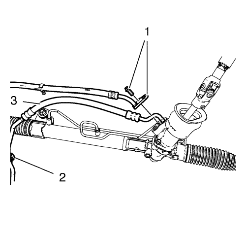
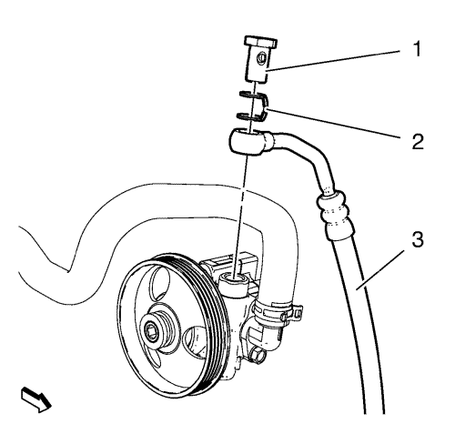
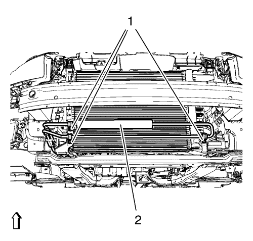

Cruze
Sustitución del manguito/tubo de entrada del mecanismo de la dirección asistida.
Procedimiento de desmontaje
Desmonte el panel del paragolpes delantero. Consultar
Sustitución del panel del parachoques delantero
Drenar la máxima cantidad posible de líquido de dirección asistida del depósito periférico.
Coloque los depósitos de vaciado debajo del vehículo donde sea necesario.

Desmonte el perno del tubo flexible de entrada del mecanismo de la dirección asistida (1).
Desmonte el tubo flexible de entrada (3) del clip (2)

Desatornille el tornillo hueco (1).
Desmonte la junta (2).
Desmonte el tubo flexible de entrada (3) de la bomba de la dirección asistida.

Desenrosque las 3 tuercas de soporte (1).
Desmonte el tubo flexible de entrada del mecanismo de la dirección (2) del vehículo.
Extraiga del mecanismo de la dirección la junta de aceite del mecanismo de la dirección.
Procedimiento de montaje
Monte en el mecanismo de la dirección la NUEVA junta de aceite del mecanismo de la dirección.
Asegúrese de que las juntas de aceite del mecanismo de la dirección están completamente asentadas en el mecanismo de la dirección.
Monte el tubo flexible de entrada del mecanismo de la dirección (2) en el vehículo.
Precaución:
Consulte
Precaución con las fijaciones
en la sección Prólogo.
Monte las 3 tuercas de soporte (1) y apriételas hasta
9 N·m (80 lib. pulg.)
.
Monte el tubo flexible de entrada (3) en la bomba de la dirección asistida.
Monte la junta (2).
Monte el tornillo hueco (1) y apriételo hasta
21 N·m (16 lib. pie)
.
Monte el tubo flexible de entrada (3) en el clip (2).
Monte el tubo flexible de entrada del mecanismo de la dirección asistida (1) y apriételo a
11 N·m (98 lib. pulg.)
.
Limpie del vehículo cualquier exceso de líquido de la dirección y desmonte las bandejas de drenaje.
Monte el panel del parachoques delantero. Consultar
Sustitución del panel del parachoques delantero
Rellenar y purgar el sistema de la dirección asistida. Consultar
Purga de aire del sistema de dirección asistida
© Copyright Chevrolet. Reservados todos los derechos